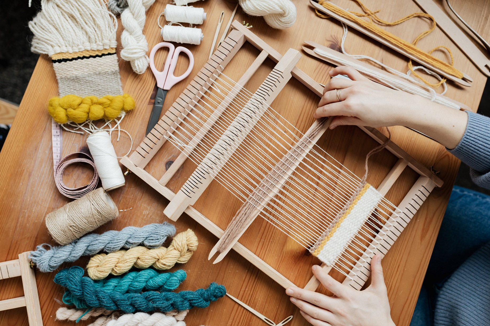
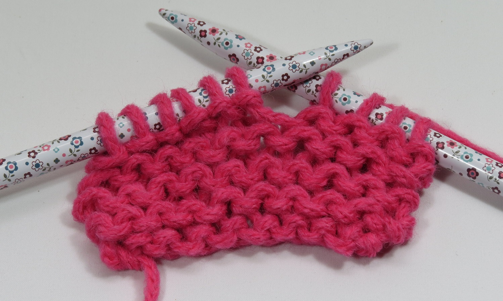
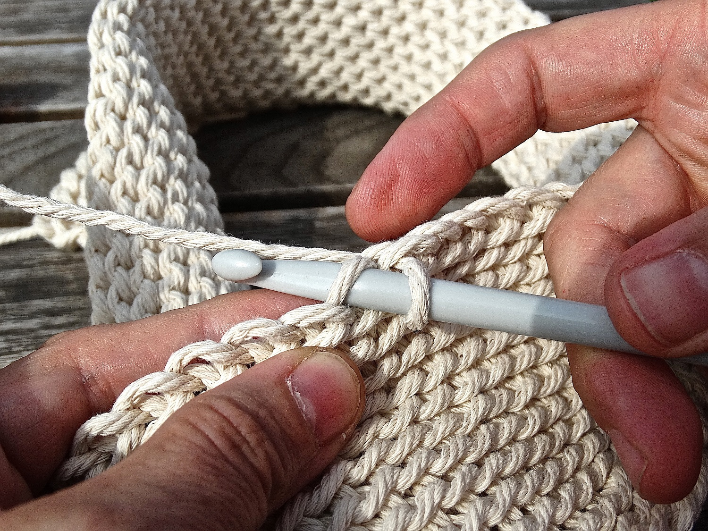
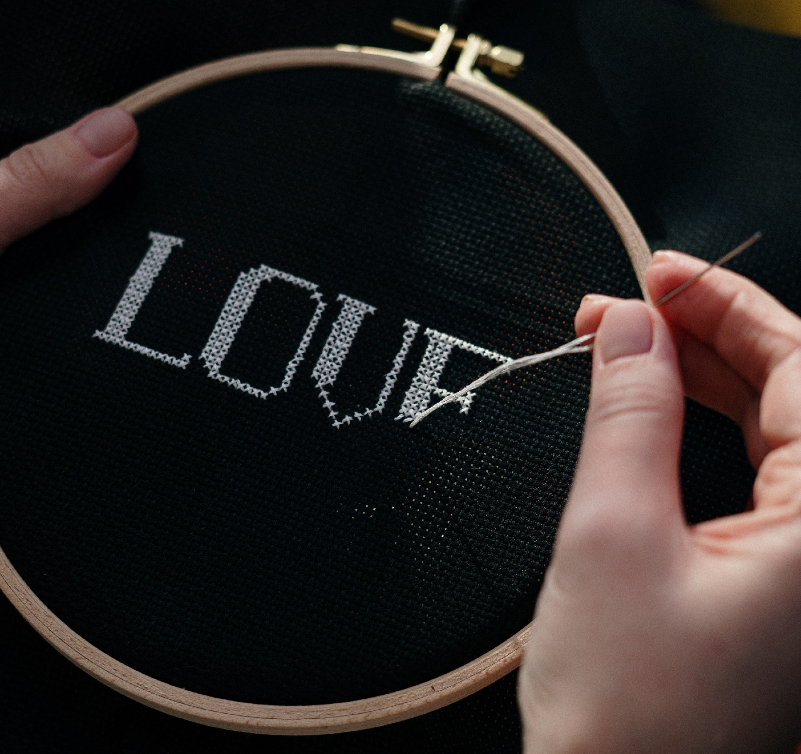
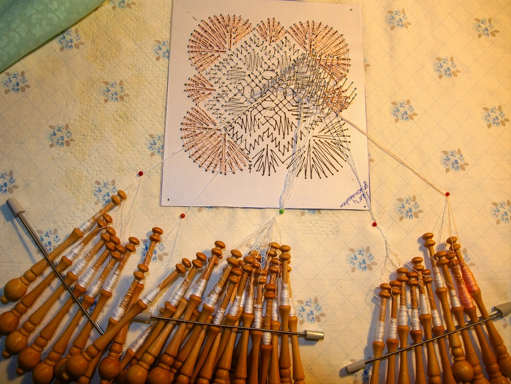
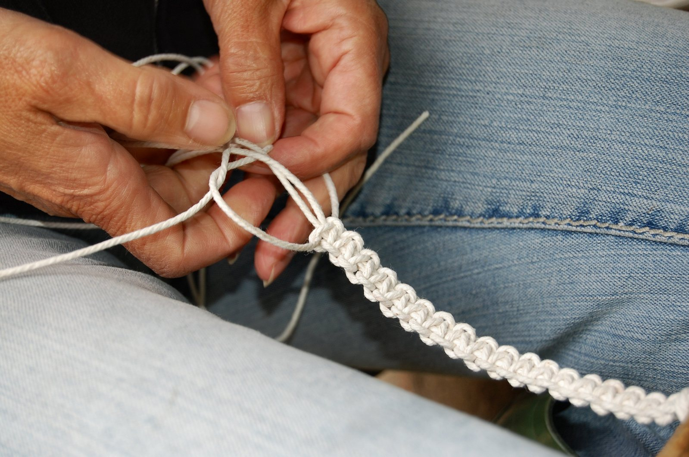

Met garen kun je verschillende dingen doen. Hieronder volgen een aantal voorbeelden van de bekendste hobbies
en fabriekstoepassingen.
Weven
Weven kan met de hand of met machines. Weefgetouwen kunnen heel klein zijn, om bijvoorbeeld armbadjes te
weven, of heel groot voor kleden en lappen stof.
Eerst worden er garen gespannen in de lengte en vervolgens wordt er ander garen in de breedte doorheen
geweven.
Met weven zijn verschillende patronen mogelijk door het gebruik van verschillende kleuren.
Over het algemeen is het resultaat dicht gelijkmatig.
Geweven stoffen rekken niet en worden voor allerlei doeleinden gebruikt. Zo zijn spijkerbroeken en simpele
katoenen t-shirts gemaakt van geweven stoffen.

Breien
Breien wordt met gedaan op twee of meer naalden of door machines. De stof die zo ontstaat is heel rekbaar en
elastisch en wordt voor veel doeleinden gebruikt. Zo zijn rekbare t-shirts door machines gebreid en kunnen
truien en sokken door machines of met de hand gebreid zijn.
Met breien zijn veel verschillende patronen mogelijk.
Zowel door het gebruik van verschillende kleuren, als door het gebruik van verschillende steken.
Denk bijvoorbeeld aan kabels, ribbels of gaatjes.

Haken
Haken wordt gedaan met één naald met aan de kop een kromme haak. Er zijn geen machines die gehaakte weefsels
kunnen maken.
Gehaakte stoffen zijn elastischer dan geweven stoffen, maar minder elastisch dan gebreide stoffen.
Ook met haken zijn de mogelijkheden bijna eindeloos.
De patronen kunnen gemaakt worden door verschillende kleuren en verschillende steken waarbij er nog meer
mogelijk is dan met breien.
Hierdoor zijn er ook erg veel toepassingen voor haken te bedenken, variërend van pannenlappen en dekens tot
kleding en muurversieringen.

Borduren
Bij borduren wordt een gekleurd draadje kruislings door grof een geweven stof gestoken. De patronen ontstaan
door elk kruisje een eigen kleur te geven.
Bij sommige borduursels wordt niet gewerkt met kruisjes maar door heel veel streepjes naast elkaar te maken.
Op die manier kunen levensecht lijkende dieren nagemaakt worden.
Alle soorten borduren kunnen met de hand gedaan worden, maar ook door machines.

Kantklossen
Bij kantklossen worden heel veel verschillende klosjes garen steeds over elkaar heen geknoopt in
ingewikkelde patronen.
Op deze manier kan prachtig en sterk kant gecreëerd worden.
De toepassing is meestal als sierrandje, maar kan ook op zichzelf als kleed of kleding gemaakt worden.

Macramé
Bij macramé wordt vaak wat dikker stevig garen gebruikt. Er worden door middel van verschillende knopen op
verschillende afstanden patronen gemaakt.
Met macramé kunnen bijvoorbeeld plantenhangers en vliegennetten voor deuren gemaakt worden.
